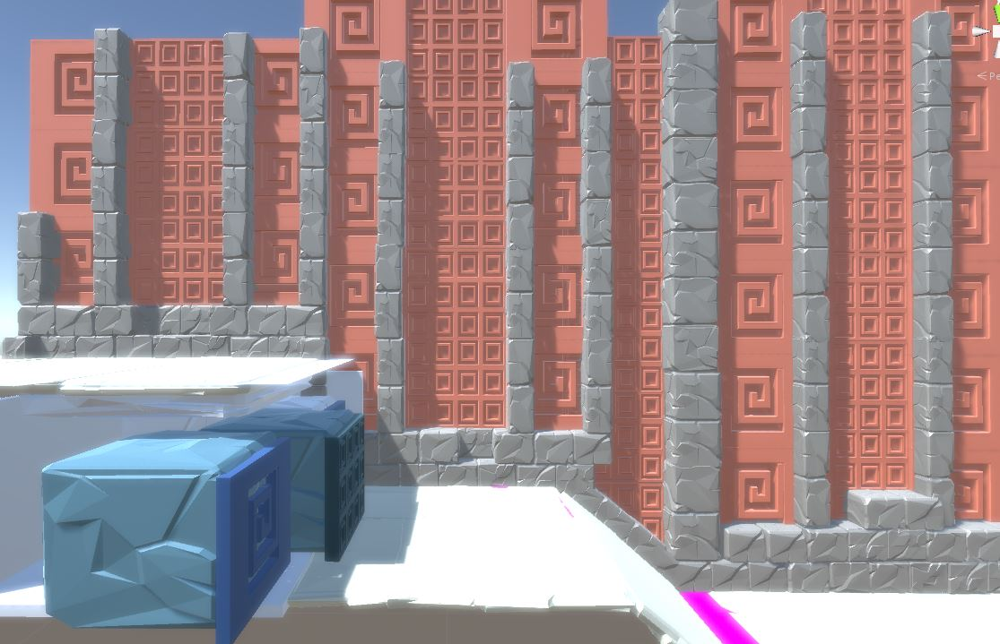

Escape your fate
Lost Temple is a sidescrolling platformer game where you play as Jesse, an artifact hunter. Your goal is to make it through the temple alive! Lost Temple is made in Unity. My role on the project was as a designer and programmer.